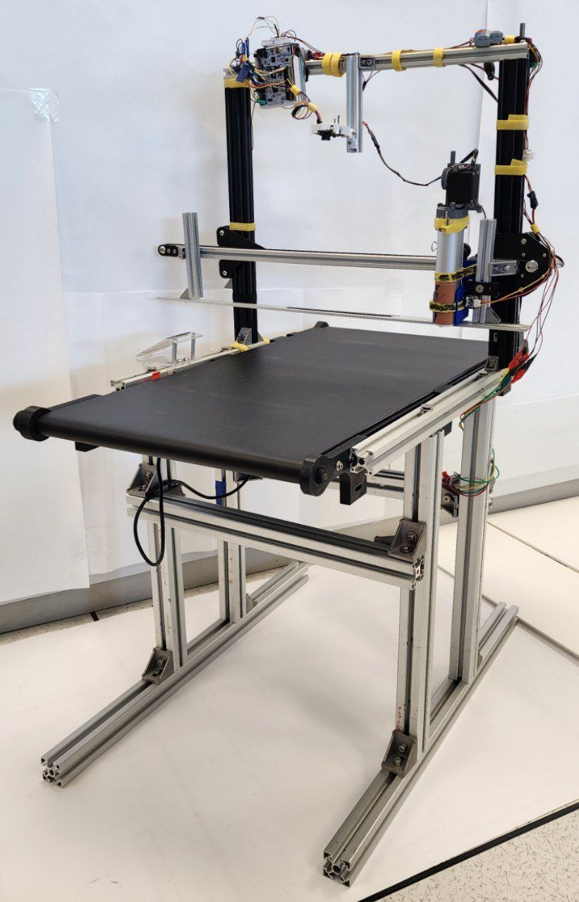
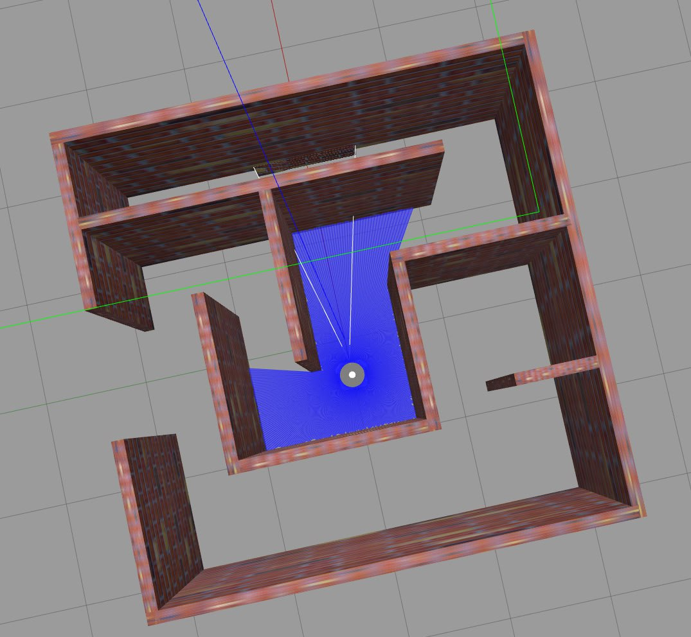
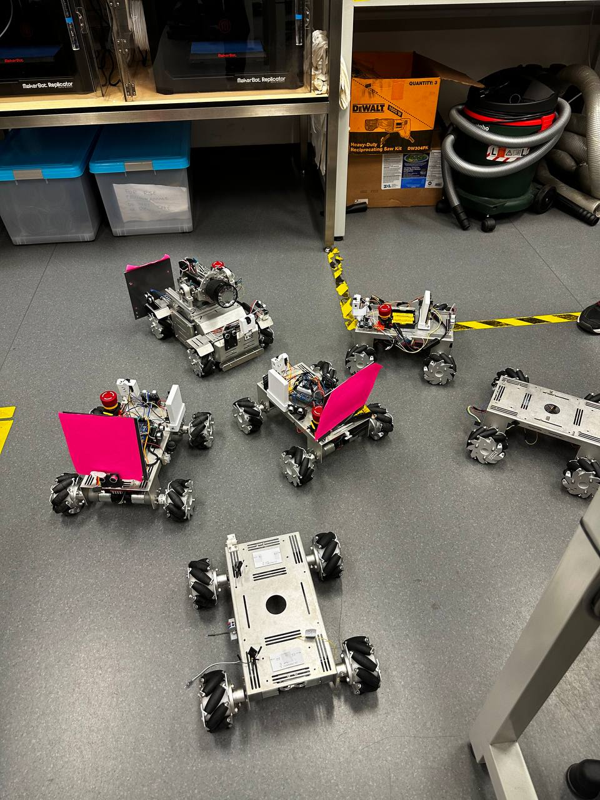
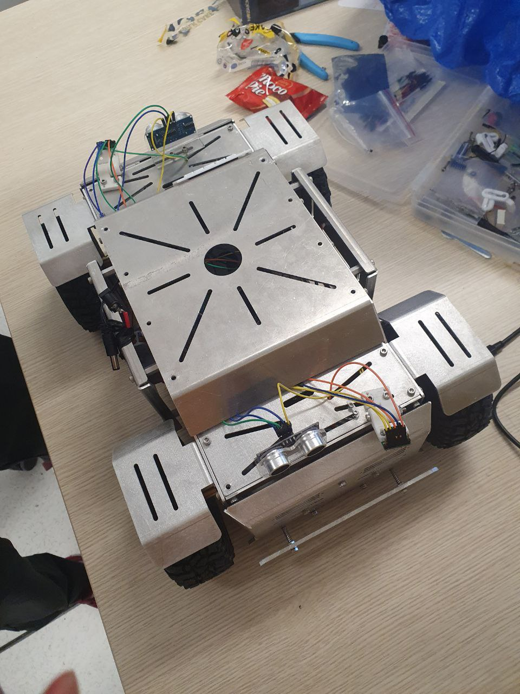
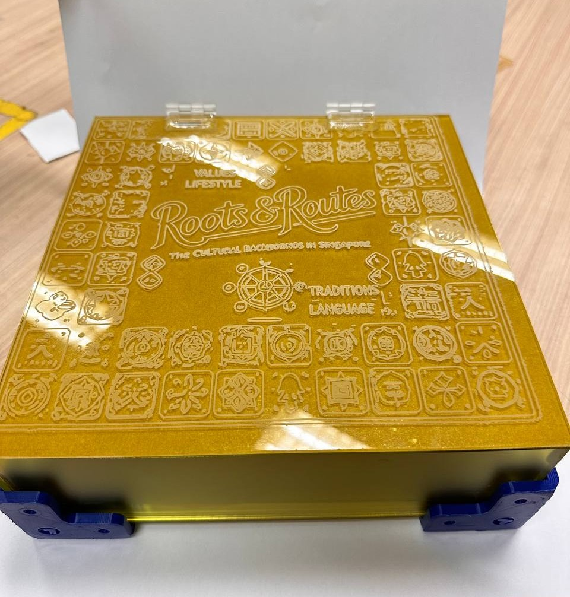

Systems Engineering
To cope with change while setting a direction to align the project team towards the objective of the Organization.
Robotics Systems Engineering Undergraduate
I am a driven and ambitious student in my second year of studies in Singapore Institute of Technology (SIT), taking a Bachelor of Engineering with Honours in Robotics Systems. I take pride in taking charge of projects in school and leading my team toward producing results.

To cope with change while setting a direction to align the project team towards the objective of the Organization.
Finding the simplest solutions to the most complex of problems.
Defining an interface where robots and machines can come together as one. To explore the fundamentals of the Robot Operating System (ROS), the architecture of ROS Control, and its applications in the field of robotics.
To define the Project Management Plan (PMP) to align the project team with the scope necessary for project success.

Define an Innovative Food Printing system using a Systems approach. The formal application of Systems Engineering Concepts & Principles based on 15288 Processes

Collaborated with industry partner Bolloré Logistics in line with academic project: Project 4 to tackle problem statement: "Simulate assembly line automation. Using robotics and machines, the students can also model out before and after automation to show the productivity improvement and reduction of reliance on human resources."

Develop Project Management Skills with reference to Project Management Body of Knowledge (PMBoK) and design a maze-solving algorithm with the use of Robot Operating System 2 (ROS2) Framework without any hardware.

Fabricate a landmark of Singapore and design a maze-solving algorithm with the use of Robot Operating System (ROS) Framework that can be implemented on AgileX LIMO, the Robotics Systems Platform given.

Design and fabricate a torchlight holder that is able rotate on the X-axis and switch on the torchlight. Build upon Project 1: Design a Object-Oriented Colour-Tracking code and develop Embedded Systems foundation with the use of hardware and software to enable wireless communication with each other: Parallax Propellor Board, STM32 Board, RoboClaw, Pixy Cam, Ultrasonic sensors, Tof sensors and Mecanum Wheels.

Develop foundational Mechanical, Electrical and Software skills: Using a given Robotics Platform, demonstrate Obstacle Avoidance Capabilities to get to a target destination with the use of Ultrasonic sensors and Tof sensors.

Collaborated with SIT Accountancy undergraduates to address a problem statement under KPMG Theme: "Promote an inclusive working culture."